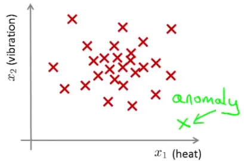
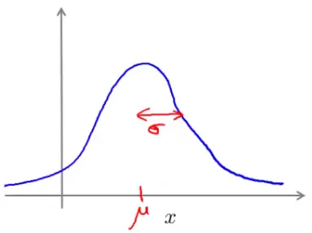
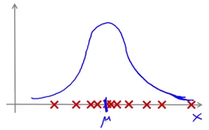
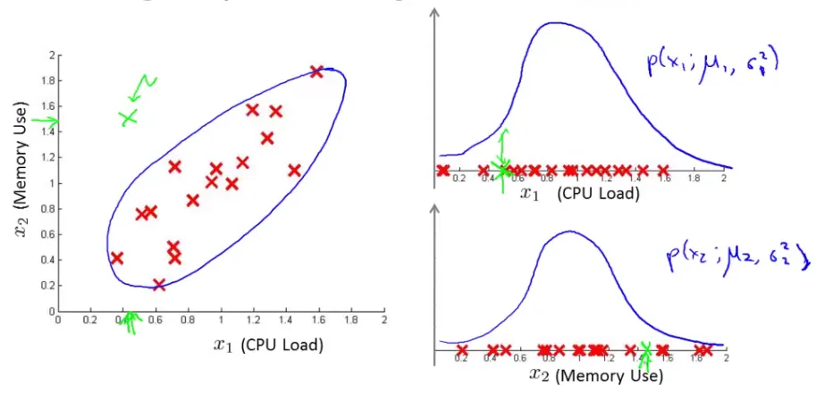
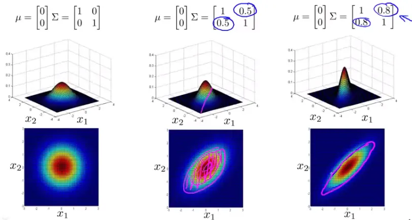

Anomaly Detection in Machine Learning
Anomaly detection involves identifying data points that significantly differ from the majority of the data, often signaling unusual or suspicious activities. This technique is widely used across various domains, such as fraud detection, manufacturing, and system monitoring.
Concept of Anomaly Detection
- Baseline Establishment: The first step in anomaly detection is to establish a normal pattern or baseline from the dataset.
- Density Threshold (Epsilon): Data points are flagged as anomalies if their density, under the fitted normal-data model, falls below a threshold $\epsilon$.
- If $p(x_{\text{test}}) < \epsilon$, the data point is considered an anomaly.
- If $p(x_{\text{test}}) \geq \epsilon$, the data point is considered normal.
- Threshold Selection: The value of $\epsilon$ is critical and is chosen using labeled validation cases, alert costs, or a stated target false-alarm rate.

Applications of Anomaly Detection
I. Fraud Detection:
- User behavior metrics (online time, login location, spending patterns) are analyzed.
- A model of typical user behavior is created, and deviations are flagged as potential fraud.
II. Manufacturing: In scenarios like aircraft engine production, anomalies can indicate defects or potential failures.
III. Data Center Monitoring: Monitoring metrics (memory usage, disk accesses, CPU load) to identify machines that are likely to fail.
Utilizing the Gaussian Distribution
- Mean ($\mu$) and Variance ($\sigma^2$): The Gaussian distribution is characterized by these parameters.
- Density Calculation:
$$ p(x; \mu; \sigma^2) = \frac{1}{\sqrt{2\pi\sigma^2}} \exp\left(-\frac{(x-\mu)^2}{2\sigma^2}\right) $$

- Data Fitting: Estimating the Gaussian distribution from the dataset to represent the normal behavior.

Evaluating Anomaly Detection Systems
- Data Split: Divide the data into training, cross-validation, and test sets.
- Performance Metrics: Precision and recall are often used to evaluate the effectiveness of the anomaly detection system.
- Fine-Tuning: Adjust the model and $\epsilon$ based on the performance metrics to improve accuracy.
Algorithm Steps
-
Feature Selection: Choose features $x_i$ that might be indicators of anomalous behavior.
-
Parameter Fitting: Calculate the mean ($\mu_j$) and variance ($\sigma_j^2$) for each feature
$$ \mu_j = \frac{1}{m} \sum_{i=1}^m x_j^{(i)} $$
$$ \sigma_j^2 = \frac{1}{m} \sum_{i=1}^m (x_j^{(i)} - \mu_j)^2 $$
- Density Computation for New Example: For a new example $x$, compute the density $p(x)$:
$$ p(x) = \prod_{j=1}^n \frac{1}{\sqrt{2\pi\sigma_j^2}} \exp\left(-\frac{(x_j - \mu_j)^2}{2\sigma_j^2}\right) $$
Below is the Python implementation of the Gaussian distribution, data fitting, and evaluation of anomaly detection systems based on the algorithm steps.
import numpy as np
# Function to calculate Gaussian Density
def gaussian_density(x, mean, variance):
coefficient = 1 / np.sqrt(2 * np.pi * variance)
exponent = np.exp(-((x - mean) ** 2) / (2 * variance))
return coefficient * exponent
# Function to fit Gaussian parameters (mean and variance) for each feature
def fit_gaussian_parameters(X):
mean = np.mean(X, axis=0)
variance = np.var(X, axis=0)
return mean, variance
# Function to calculate the density of a new example using the Gaussian distribution
def compute_density(x, mean, variance):
probabilities = gaussian_density(x, mean, variance)
return np.prod(probabilities)
# Example dataset
X_train = np.array([[1.1, 2.2], [1.3, 2.1], [1.2, 2.3], [1.1, 2.4]])
X_cross_val = np.array([[1.0, 2.0], [1.4, 2.5]])
# Fitting the Gaussian parameters
mean, variance = fit_gaussian_parameters(X_train)
# Calculate the density of a new example
x_new = np.array([1.2, 2.2])
density = compute_density(x_new, mean, variance)
print("Mean:", mean)
print("Variance:", variance)
print("Density of new example:", density)
# Performance Metrics (Precision and Recall)
# Note: This requires true labels and predicted labels
from sklearn.metrics import precision_score, recall_score
# Example true labels and predicted labels
y_true = np.array([0, 0, 1, 1])
y_pred = np.array([0, 0, 1, 0])
precision = precision_score(y_true, y_pred)
recall = recall_score(y_true, y_pred)
print("Precision:", precision)
print("Recall:", recall)Here are the results:
I. Gaussian Parameters:
- Mean: Feature 1: 1.175, Feature 2: 2.25
- Variance: Feature 1: 0.006875, Feature 2: 0.0125
II. Density of New Example:
- For the new example $[1.2, 2.2]$, the calculated density using the Gaussian distribution is approximately 14.844.
III. Performance Metrics:
- Precision: 1.0 (All instances predicted as anomalies are actually anomalies, with no false positives)
- Recall: 0.5 (Only 50% of the actual anomalies were correctly identified, indicating some false negatives)
Developing and Evaluating an Anomaly Detection System
I. Labeled Data: Have a dataset where $y=0$ indicates normal (non-anomalous) examples, and $y=1$ represents anomalous examples.
II. Data Division: Separate the dataset into a training set (normal examples), a cross-validation (CV) set, and a test set, with both the CV and test sets including some anomalous examples.
III. Example Case:
- Imagine a dataset with 10,000 normal (good) engines and 50 flawed (anomalous) engines.
- Training set: 6,000 good engines.
- CV set: 2,000 good engines, 25 anomalous.
- Test set: 2,000 good engines, 25 anomalous.
IV. Evaluation Metrics:
- True positives (TP), false positives (FP), false negatives (FN), and true negatives (TN).
- Precision (the proportion of true positives among all positives identified by the model).
- Recall (the proportion of true positives identified out of all actual positives).
- F1-score (a harmonic mean of precision and recall, providing a balance between them).
Below is the complete Python code for the implementation:
import numpy as np
from sklearn.metrics import confusion_matrix, precision_score, recall_score, f1_score
rng = np.random.default_rng(0)
normal = rng.normal(0, 1, (10000, 2))
anomalous = rng.normal(5, 1, (50, 2))
training = normal[:6000]
validation = np.vstack([normal[6000:8000], anomalous[:25]])
testing = np.vstack([normal[8000:], anomalous[25:]])
truth = np.r_[np.zeros(2000, dtype=int), np.ones(25, dtype=int)]
mean = training.mean(axis=0)
variance = training.var(axis=0)
def score(X):
# Larger score means less typical under the fitted diagonal Gaussian.
return 0.5*np.sum(np.log(2*np.pi*variance)+(X-mean)**2/variance, axis=1)
validation_scores = score(validation)
best_threshold, best_f1 = None, -1.
for threshold in np.unique(validation_scores):
predicted = validation_scores > threshold
tp = np.sum(predicted & (truth == 1))
fp = np.sum(predicted & (truth == 0))
fn = np.sum(~predicted & (truth == 1))
f1 = 2*tp/(2*tp+fp+fn) if 2*tp+fp+fn else 0.
if f1 > best_f1:
best_threshold, best_f1 = threshold, f1
results = {}
for label, X in [("validation", validation), ("test", testing)]:
predicted = score(X) > best_threshold
counts = confusion_matrix(truth, predicted, labels=[0, 1]).ravel()
metrics = [precision_score(truth, predicted, zero_division=0),
recall_score(truth, predicted, zero_division=0),
f1_score(truth, predicted, zero_division=0)]
results[label] = (counts, metrics)
print(label, "TN/FP/FN/TP:", counts, "precision/recall/F1:", metrics)
print("validation-selected score threshold:", best_threshold)The following results come from running the seeded simulation above:
| Split | TN | FP | FN | TP | Precision | Recall | F1 |
|---|---|---|---|---|---|---|---|
| Validation | 2000 | 0 | 0 | 25 | 1.000000 | 1.000000 | 1.000000 |
| Test | 2000 | 0 | 0 | 25 | 1.000000 | 1.000000 | 1.000000 |
The negative-log-density threshold selected on validation data is approximately 10.183371. It is reused unchanged for the test set. Gaussian parameters use only the normal training observations, and all 50 generated anomalies are assigned to validation or testing.
These simulated populations are intentionally well separated. Their results check the complete fitting, threshold-selection, and evaluation procedure; they do not estimate performance on real defective engines. Normal training data contaminated by failures would define a different reference distribution.
When anomaly is defined by density below epsilon, lowering epsilon reduces the number of alerts. With the negative-log-density score used in this code, raising its cutoff has the same effect. Feature changes and threshold changes should be evaluated on development data before a new final assessment.
Additional labeled anomalies can help assess detection failures or train a separate supervised model. Adding them to the normal-only Gaussian fit changes what is considered normal and can make the reference less useful. The appropriate use depends on the intended model.
Selecting a Good Evaluation Metric
- F1-Score: This is particularly useful in the context of anomaly detection where the class distribution is highly imbalanced (many more normal than anomalous examples).
- Precision and Recall: These metrics provide a more nuanced understanding of the system’s performance, especially when the cost of false positives and false negatives varies.
Concept of Multivariate Gaussian Distribution
- Scenario: Imagine fitting a Gaussian distribution to two features, such as CPU load and memory usage.
- Example: Let the first coordinate be CPU load and the second memory use. A point $(1.5,0.4)$ has high CPU load and low memory use relative to the fitted data. More generally, full covariance can detect unusual combinations even when individual coordinates are typical.

Parameters of the Multivariate Gaussian Model
- Mean Vector ($\mu$): An n-dimensional vector representing the mean of each feature.
- Covariance Matrix ($\Sigma$): An $[n \times n]$ matrix, capturing how each pair of features varies together.
- Density Density Function:
$$ p(x; \mu; \Sigma) = \frac{1}{(2\pi)^{n/2}|\Sigma|^{1/2}} \exp\left(-\frac{1}{2}(x - \mu)^T \Sigma^{-1}(x - \mu)\right) $$

Here’s the complete Python code for the implementation:
import numpy as np
# Function to calculate the Multivariate Gaussian Density
def multivariate_gaussian_density(x, mean, covariance):
n = len(mean)
diff = x - mean
sign, logdet = np.linalg.slogdet(covariance)
if sign <= 0:
raise ValueError("covariance must be positive definite")
log_density = -0.5 * (n*np.log(2*np.pi) + logdet + diff @ np.linalg.solve(covariance, diff))
return np.exp(log_density)
# Example dataset: CPU load and memory usage
data = np.array([[0.5, 1.2], [0.6, 1.4], [0.8, 1.3], [0.7, 1.5], [0.9, 1.7], [0.6, 1.3]])
# Calculate the mean vector and covariance matrix
mean_vector = np.mean(data, axis=0)
covariance_matrix = np.cov(data, rowvar=False, bias=True) # Gaussian MLE: divide by m
# Example of a new point
x_new = np.array([1.5, 0.4])
# Calculate the density using the multivariate Gaussian distribution
density = multivariate_gaussian_density(x_new, mean_vector, covariance_matrix)
mean_vector, covariance_matrix, densityHere are the results:
I. Parameters of the Multivariate Gaussian Model:
Mean Vector ($\mu$):
- Feature 1 (CPU Load): 0.683
- Feature 2 (Memory Usage): 1.4
Covariance Matrix ($\Sigma$):
[[0.01805556, 0.01666667],
[0.01666667, 0.02666667]]II. Density of New Example: For the new example with a high CPU load ($x_1=1.5$) and low memory use ($x_2=0.4$), the calculated density using the multivariate Gaussian distribution is approximately 6.645e-67.
III. Interpretation:
- The mean vector represents the average CPU load and memory usage from the dataset. This gives the center of the multivariate Gaussian distribution.
- The covariance matrix captures how CPU load and memory usage vary together. A positive covariance between these features suggests that as one increases, the other tends to increase as well.
- The extremely low density (6.645e-67) indicates that the new example $[1.5, 0.4]$ is highly unlikely under the learned multivariate Gaussian distribution. This combination of high CPU load and low memory use is unusual compared to the typical patterns in the training data, suggesting it could be an anomaly.
Gaussian Model vs. Multivariate Gaussian Model
| Aspect | Gaussian Model | Multivariate Gaussian Model |
|---|---|---|
| Usage | Assumes diagonal covariance in the selected features. | Estimates the full feature covariance. |
| Feature Creation | Requires manual creation of features to capture unusual combinations in values. | Directly captures correlations between features without needing extra feature engineering. |
| Computational Efficiency | Generally more computationally efficient. | Less efficient computationally. |
| Scalability | Scales well to large feature vectors. | An unregularized covariance needs full centered column rank, requiring $m>n$ but not guaranteed by it. |
| Training Set Size | Estimates fewer covariance parameters; small samples can still give imprecise means and variances. | Requires a larger training set relative to the number of features. |
| Advantage | Simple to implement. | Can detect anomalies due to unusual combinations of normal-appearing individual features. |
Density Is Neither Point Probability nor Failure Probability
A continuous Gaussian returns a probability density. Its units are inverse feature units, and it can exceed one. The earlier two-feature value around 14.844 is therefore possible; it is not a probability of 1,484%. A region's probability is obtained by integrating density over that region.
An anomaly score also does not directly estimate $P(\text{failure}\mid x)$. A rare but legitimate state can have low density, and a harmful event can occur in a common state. A posterior failure probability requires information about failures and their prevalence, or an explicit joint model.
Work in Log Density and Check against Independent Implementations
For a full Gaussian covariance, write
$$ \log p(x)=-\frac12\{n\log(2\pi)+\log|\Sigma| +(x-\mu)^\top\Sigma^{-1}(x-\mu)\}. $$
The quadratic is squared Mahalanobis distance. The determinant accounts for the volume of the covariance ellipsoid. Both matter when comparing fitted densities. A numerical solve evaluates the quadratic without explicitly constructing an inverse.
For the six CPU/memory observations, the fitted mean is approximately $(0.683333,1.4)$ and the maximum-likelihood covariance is
$$ \begin{bmatrix}0.0180556&0.0166667\\0.0166667&0.0266667\end{bmatrix}. $$
The covariance denominator is m, matching Gaussian maximum likelihood; a sample covariance with denominator $m-1$ is a different estimate. The following check compares a direct implementation with SciPy and a fitted one-component GaussianMixture in scikit-learn.
import numpy as np
from scipy.stats import multivariate_normal
from sklearn.metrics import f1_score
from sklearn.mixture import GaussianMixture
training = np.array([[0.5, 1.2], [0.6, 1.4], [0.8, 1.3], [0.7, 1.5], [0.9, 1.7], [0.6, 1.3]])
mean = training.mean(axis=0)
centered = training - mean
covariance = centered.T @ centered / len(training)
def log_density(X):
delta = np.atleast_2d(X) - mean
solved = np.linalg.solve(covariance, delta.T).T
sign, logdet = np.linalg.slogdet(covariance)
assert sign > 0
return -0.5 * (len(mean) * np.log(2 * np.pi) + logdet + np.sum(delta * solved, axis=1))
validation = np.array([[0.7, 1.4], [0.6, 1.3], [1.5, 0.4], [1.7, 0.3]])
truth = np.array([0, 0, 1, 1])
manual = log_density(validation)
np.testing.assert_allclose(manual, multivariate_normal.logpdf(validation, mean=mean, cov=covariance))
library = GaussianMixture(n_components=1, covariance_type='full', reg_covar=0.0, random_state=0, tol=1e-10).fit(training)
np.testing.assert_allclose(manual, library.score_samples(validation), atol=1e-09)
anomaly_score = -manual
candidates = np.r_[np.nextafter(anomaly_score.min(), -np.inf), np.unique(anomaly_score)]
threshold = max(candidates, key=lambda t: f1_score(truth, anomaly_score > t))
np.testing.assert_array_equal(anomaly_score > threshold, truth)
scaled_log = multivariate_normal.logpdf(validation * 100, mean=mean * 100, cov=covariance * 10000)
np.testing.assert_allclose(scaled_log, manual - 2 * np.log(100))
print('Gaussian mean:', np.round(mean, 8), 'MLE covariance:\n', np.round(covariance, 8))
print('validation log densities:', np.round(manual, 6))
print('validation-selected negative-log-density threshold:', round(threshold, 6))The validation log densities are approximately $2.393363,2.195636,-152.379364,-210.368000$. The constructed normal and anomalous validation cases separate perfectly at a cutoff selected from those scores. Their simplicity verifies threshold direction and implementation, not operational accuracy.
Products of many small marginal densities can underflow to zero. Summing log densities avoids that loss of ordering. Independently modeled features contribute additive log terms; correlated features require covariance structure or a representation that makes the diagonal approximation appropriate.
Units and Covariance Rank Matter
Multiplying each of n coordinates by c changes log density by $-n\log|c|$ under the corresponding transformed model. The code checks this at c equal to 100. Ranking within that one transformation is unchanged by the common shift, but a numerical density cutoff must change with the units.
A centered covariance matrix has rank at most $\min(n,m-1)$. Enough rows are necessary for an invertible full covariance, and duplicated or linearly related features can still make it singular. Shrinkage or a documented diagonal noise term can stabilize a fitted covariance; it also changes the model and should be selected with the intended task in mind.
Positive correlation can make opposite-sign deviations unusual. For covariance $\left[\begin{smallmatrix}1&0.9\\0.9&1\end{smallmatrix}\right]$, vectors $(1,1)$ and $(1,-1)$ have the same marginal coordinate magnitudes, but squared Mahalanobis distances $2/1.9\approx1.0526$ and $2/0.1=20$. A diagonal model gives both distance two and misses that distinction.
The useful threshold depends on alert prevalence, costs, and the population being monitored. Fit the reference on permitted training data, select thresholds on development cases, and report false positives as well as detected failures. Reusing a test set to tune the cutoff makes its resulting score part of model development.
Reference
These notes are based on the free video lectures offered by Stanford University, led by Professor Andrew Ng. These lectures are part of the renowned Machine Learning course available on Coursera. For more information and to access the full course, visit the Coursera course page.